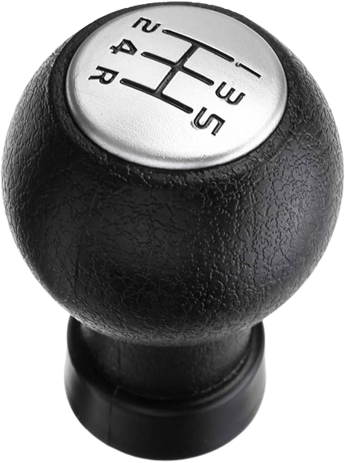
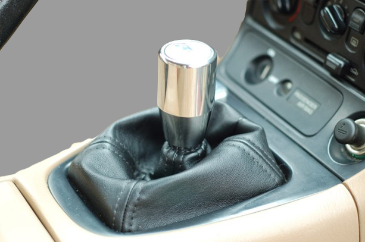
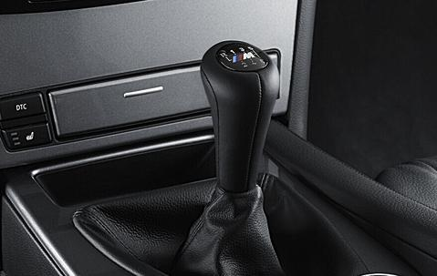

Gear shift knob, sometimes just called the shift knob or gear knob. It's the part of the gear shift lever that you grip and use to change gears in a manual transmission vehicle or select different driving modes in an automatic transmission vehicle.
In a manual transmission vehicle, the gear shift knob typically has markings indicating the different gears, such as 1, 2, 3, 4, 5, and sometimes reverse. In an automatic transmission vehicle, the gear shift knob may have markings like P (Park), R (Reverse), N (Neutral), D (Drive), and sometimes additional modes like S (Sport) or L (Low). The shift knob is an essential part of the vehicle's interior, and its design can vary widely depending on the make and model of the car. Some shift knobs are basic and utilitarian, while others are designed for aesthetic appeal or enhanced grip and comfort.
Here are some key points to know about gear knobs:
* Material: Gear knobs can be made from various materials, including plastic, metal, wood, leather, and even glass. The choice of material often depends on factors such as aesthetics, comfort, and durability.
* Design and Style: Known for their fuel efficiency and torque, compressing air to ignite the injected diesel fuel without spark plugs.
* Functionality: The primary function of a gear knob is to allow the driver to easily shift between different gears. It typically has markings or indicators to denote the position of each gear, such as numbers or letters.
* Customization: Many car enthusiasts choose to customize their gear knobs to reflect their personal style or preferences. This may involve swapping out the factory-installed gear knob for an aftermarket one or adding decorative elements such as shift boot covers, illuminated knobs, or aftermarket badges.
* Compatibility When replacing a gear knob, it's important to ensure compatibility with the vehicle's make, model, and transmission type. Different vehicles may have different thread sizes or attachment mechanisms, so it's essential to choose a gear knob that fits properly.
* Maintenance: Maintenance: Gear knobs may require occasional cleaning and maintenance to keep them looking their best. Depending on the material, they can usually be cleaned with mild soap and water or specialty cleaning products designed for automotive interiors.
* Safety:While gear knobs are primarily a cosmetic and functional accessory, it's important to ensure that they do not interfere with the safe operation of the vehicle. A properly installed and securely attached gear knob should not impede the driver's ability to shift gears or operate the vehicle controls safely.
Overall, gear knobs play a practical role in manual transmission vehicles while also serving as a customizable accessory that allows drivers to personalize their cars.
Gear knob materials
Gear knobs can be made from various materials, each offering different characteristics in terms of aesthetics, durability, and tactile feel. Some common materials used for gear knobs include:
1. Plastic: Plastic gear knobs are lightweight, affordable, and easy to manufacture. They come in a wide range of colors and finishes but may not offer the same durability or premium feel as other materials. 
2. Metal: Metal gear knobs, such as aluminum, stainless steel, or brass, are known for their durability and weightiness. They can provide a premium look and feel, often with a polished or brushed finish. However, metal gear knobs may become hot or cold to the touch depending on the surrounding temperature. 
3. Leather: Leather-wrapped gear knobs offer a luxurious feel and improved grip. They are often used in high-end vehicles and provide a comfortable tactile experience for the driver's hand. Leather gear knobs can be more susceptible to wear and tear over time, but proper maintenance can help prolong their lifespan. 
4. Wood:
Wood gear knobs add a touch of elegance and warmth to the interior of a vehicle. They are often made from high-quality hardwoods such as walnut, mahogany, or cherry and may feature polished or lacquered finishes. Wood gear knobs require more careful maintenance to prevent damage from moisture or scratches

5. Carbon Fiber:
Carbon fiber gear knobs are lightweight, strong, and have a modern, high-tech appearance. They are often used in performance-oriented or sports cars due to their racing-inspired aesthetic. Carbon fiber gear knobs can be more expensive than other materials but offer excellent durability and a distinctive look.

6. Acrylic or Resin:
Some gear knobs are made from acrylic or resin materials, which can be molded into various shapes and colors. These materials offer versatility in design and can be customized with patterns, graphics, or embedded objects for a unique look.

7. Glass:
Glass gear knobs provide a sleek and contemporary appearance, often with a translucent or reflective finish. They are less common than other materials but can add a touch of sophistication to the vehicle's interior design.

Ultimately, the choice of material for a gear knob depends on personal preference, budget, and desired aesthetic. Some drivers prioritize durability and functionality, while others may prioritize style and luxury. Regardless of the material chosen, a well-designed and properly installed gear knob can enhance the overall driving experience.
FUNCTIONALITY OF GEAR KNOB
The functionality of a gear knob, also known as a shift knob, primarily revolves around its role in facilitating the manual shifting of gears in a vehicle equipped with a manual transmission. Here are the key aspects of its functionality:
1. Gear Selection: The primary function of a gear knob is to enable the driver to select different gears manually. This includes gears such as park, reverse, neutral, and various forward gears (e.g., first gear, second gear, etc.). The gear knob typically has markings or indicators to denote the position of each gear, making it easy for the driver to select the desired gear.
2. Transmission Control: By gripping and manipulating the gear knob, the driver engages or disengages gears within the transmission system. This action allows the driver to control the vehicle's speed, torque, and direction of travel. For example, shifting into a lower gear provides more power for acceleration, while shifting into a higher gear allows for higher speeds and fuel efficiency.
3. Ergonomics and Grip: The design of the gear knob often incorporates ergonomic features to ensure comfortable and secure handling. This includes factors such as the shape, size, texture, and material of the knob, which can influence how it feels in the driver's hand during gear changes. A well-designed gear knob enhances the driver's control and precision while shifting gears.
4. Safety: Proper operation of the gear knob is essential for safe driving. The gear knob must be securely attached to the gear stick or shift lever to prevent accidental disengagement or slippage during gear changes. Additionally, clear markings on the gear knob help the driver select the correct gear, reducing the risk of shifting errors that could compromise vehicle control and safety.
5. Customization and Personalization:While the primary function of a gear knob is mechanical, it also serves as a customizable accessory that allows drivers to personalize their vehicles. Many drivers choose aftermarket gear knobs with unique designs, materials, and finishes to enhance the aesthetic appeal of their car's interior and reflect their individual style preferences.
Overall, the functionality of a gear knob is essential for manual transmission vehicles, enabling drivers to control the transmission system effectively and ensuring a smooth and safe driving experience.
MAINTAINANCE OF GEAR KNOB
Maintaining your gear knob can help keep it looking good and functioning properly for years to come. Here are some general maintenance tips for gear knobs:
* Regular Cleaning: Dust, dirt, and oils from your hands can accumulate on the surface of the gear knob over time, leading to a grimy or sticky feel. Regularly clean the gear knob with a mild soap solution and a soft cloth to remove any dirt or residue. Avoid using harsh chemicals or abrasive cleaners, as these can damage the finish of the gear knob.
* Avoid Excessive Force: When shifting gears, avoid applying excessive force or twisting motions to the gear knob, as this can loosen or damage the attachment mechanism. Use smooth and deliberate movements to shift gears, and avoid slamming the gear knob into gear positions.
* Protect from Extreme Temperatures:Prolonged exposure to extreme temperatures, such as intense sunlight or extreme cold, can damage certain materials used in gear knobs, such as plastic or leather. Whenever possible, park your vehicle in a shaded area or use a windshield sunshade to protect the interior from excessive heat. In cold weather, allow the interior of the vehicle to warm up gradually before touching the gear knob to prevent potential damage from freezing temperatures.
* Inspect for Wear and Tear: Periodically inspect the gear knob for signs of wear and tear, such as cracks, scratches, or fading. If you notice any damage, consider replacing the gear knob to prevent further deterioration and maintain the appearance of the interior.
* Tighten Attachment Mechanism: If the gear knob feels loose or wobbly, check the attachment mechanism to ensure it is securely fastened to the gear lever. Depending on the type of attachment mechanism (e.g., threaded, set screw), tighten any screws or fasteners as needed to ensure a snug fit.
* Condition Leather or Wood: If your gear knob is made from leather or wood, consider using a specialized conditioner or protectant to moisturize and protect the material from drying out or cracking. Follow the manufacturer's instructions for application, and avoid using products that contain harsh chemicals or solvents that could damage the material.
* Handle with Care: Finally, handle the gear knob with care to avoid accidental damage. Avoid scratching or banging the gear knob against hard surfaces, and be mindful of sharp objects that could cause punctures or abrasions.
By following these maintenance tips, you can help preserve the appearance and functionality of your gear knob and ensure a pleasant driving experience.
COMPATIBILITY OF GEAR KNOB
The compatibility of a gear knob depends on several factors, including the make, model, and year of the vehicle, as well as the type of transmission (manual or automatic) and the threading or attachment mechanism of the gear lever. Here are some key considerations regarding compatibility:
1. Thread Size and Type: Gear knobs typically attach to the gear lever using threads, and the size and type of these threads can vary between different vehicles. Common thread sizes include metric sizes such as M8x1.25, M10x1.25, and M12x1.25, as well as imperial sizes such as 3/8"-16 and 5/16"-18. It's essential to choose a gear knob with threads that match those of the gear lever to ensure a proper fit.
2. Attachment Mechanism: In addition to threaded attachments, some gear knobs may use alternative attachment mechanisms, such as set screws, snap-on fittings, or adapters. The compatibility of the gear knob with the gear lever depends on whether these attachment mechanisms are compatible and properly aligned.
3. Manual vs. Automatic Transmission: Gear knobs for manual transmissions typically have a different design and attachment mechanism compared to those for automatic transmissions. Manual transmission gear knobs often have a shift pattern (e.g., R, 1, 2, 3, 4, 5, 6) engraved or printed on the knob, while automatic transmission gear knobs may have buttons or levers for engaging different gear modes (e.g., park, reverse, neutral, drive).
4. Vehicle Make and Model: Different vehicle manufacturers may use proprietary designs or attachment mechanisms for their gear knobs. Therefore, it's essential to choose a gear knob that is compatible with the specific make and model of the vehicle.
5. Trim Level and Options: In some cases, compatibility may vary depending on the trim level or options package of the vehicle. For example, vehicles with sport or performance-oriented trim levels may have different gear knobs compared to base models.
6. Customization Options: If you're considering aftermarket gear knobs for customization purposes, make sure to verify compatibility with your vehicle before making a purchase. Many aftermarket gear knobs are designed to be compatible with a wide range of vehicles, but it's still important to double-check to avoid compatibility issues.
7. Professional Installation: If you're unsure about compatibility or how to install a gear knob, consider seeking professional assistance. A qualified mechanic or automotive technician can help ensure proper fitment and installation, minimizing the risk of compatibility issues or damage to the vehicle.
In summary, compatibility is crucial when selecting a gear knob for your vehicle, and it's essential to consider factors such as thread size, attachment mechanism, transmission type, vehicle make and model, and customization options to ensure a proper fit and function.
-SAFETY-
The safety of a gear knob primarily relates to its design, attachment mechanism, and potential impact on the driver's ability to operate the vehicle safely. Here are some key aspects regarding the safety of gear knobs:
- Attachment Mechanism: A securely attached gear knob is essential for safe driving. Whether the gear knob attaches via threading, set screws, or another mechanism, it must be properly installed and tightened to prevent accidental detachment during use. Loose gear knobs can pose a safety hazard by interfering with the driver's ability to shift gears or potentially coming off while driving, leading to loss of control or accidents.
- Material and Construction: The choice of material and construction of the gear knob can impact its safety. Materials should be durable and resistant to wear and tear to ensure long-term reliability. Additionally, the gear knob should be designed and manufactured to withstand the forces exerted during normal use without breaking or fracturing.
- Ergonomics: A well-designed gear knob enhances the driver's comfort and control, which contributes to overall safety. Ergonomic considerations, such as the shape, size, and texture of the gear knob, can help prevent hand fatigue and ensure a secure grip during gear changes. A comfortable and intuitive gear knob design reduces the risk of driver distraction and improves the driver's ability to maintain focus on the road.
- Visibility and Legibility: Clear and legible markings on the gear knob are important for safe operation, especially in manual transmission vehicles. Gear positions should be clearly indicated to help the driver select the correct gear quickly and accurately, minimizing the risk of shifting errors. Illuminated gear knobs or markings can improve visibility in low-light conditions, further enhancing safety.
- Compatibility with Vehicle Controls: The placement and design of the gear knob should not obstruct or interfere with other vehicle controls, such as the steering wheel, pedals, or dashboard instruments. A properly positioned gear knob allows the driver to operate the transmission smoothly and efficiently without compromising access to essential controls or obstructing the driver's view of the road.
- Resistance to Environmental Factors: Gear knobs should be resistant to environmental factors such as extreme temperatures, moisture, and UV exposure. Materials should not degrade or deteriorate over time when exposed to common environmental conditions encountered during vehicle operation. Ensuring the durability and longevity of the gear knob helps maintain its safety and functionality over time.
By considering these factors and choosing a high-quality gear knob that meets safety standards and design principles, drivers can enhance their overall driving experience and minimize the risk of accidents or incidents related to gear knob safety concerns. Regular inspection and maintenance of the gear knob also contribute to safe vehicle operation.